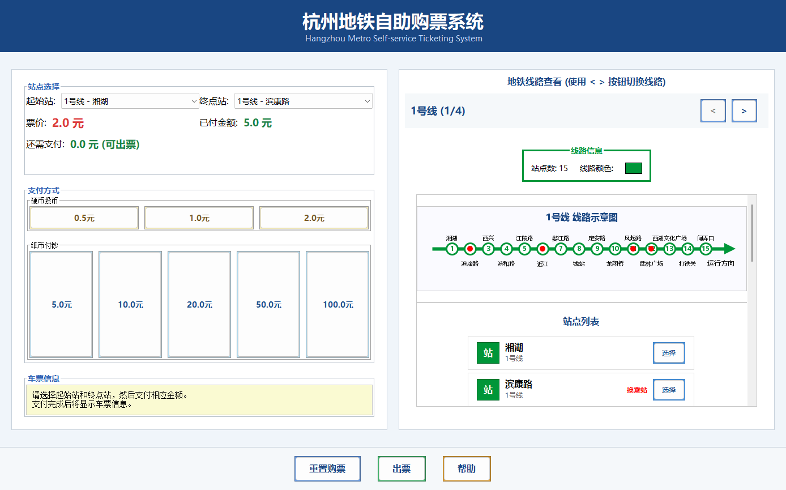

Hangzhou Metro Ticketing
杭州地铁自助购票模拟器
Java Swing 桌面购票程序：通过线路图选择站点，完成“选站 → 查看票价 → 模拟支付 → 出票找零”的完整交互。JDK 17+，无第三方依赖。
Java Swing metro ticketing simulator with station selection, fares, simulated payment and change.

亮点
- 1、2、4、5 号线示例站点与换乘标记
- 线路图或下拉框选择起终点
- 模拟投币、付钞、出票与找零
- 完善的异常状态处理